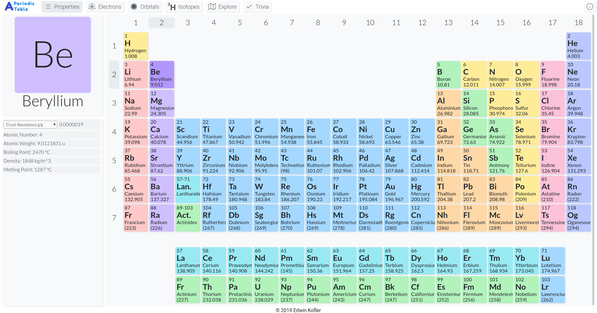
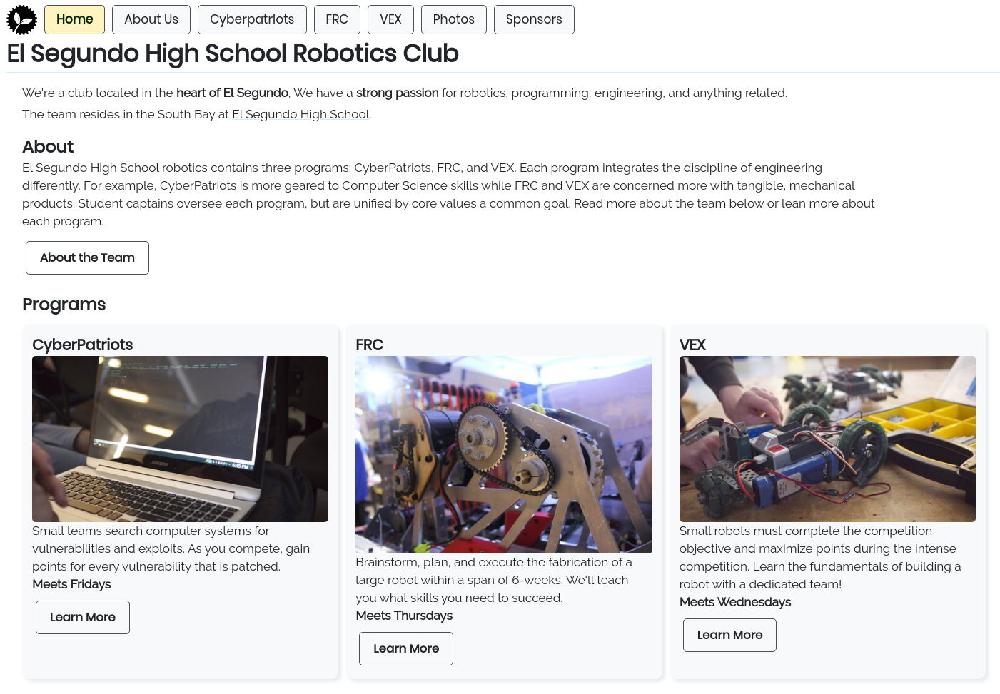

chemtable.app
interactively displays the periodic table of the elements! see
interesting graphs and charts for each element. optionally, quiz
youreself if you wish to memorize the periodic table! this is a
full-stack (javascript) web application that leverages vue and
express. this soon-to-be-beta quality app can be reached at
chemtable.app

robotics team website
i built my high school robotics club's website, originally for a
website-building competition. it's a single page application built
with vue, located at
competition.eshspotatoes.com

carnival
showcases great games made by the repl.it community. easily search,
play, and save games. some potential features include a leaderboard
system and fully-integrated multiplayer apis. project still in early
development
tails
a meta-tool used to track, organize, start, and deploy programming
projects of different languages. extreme pre-alpha quality. it
builds on a pluggable, extendable (microservice) architecture,
extensively leveraging javascript, docker, nats (message broker),
and kubernetes technologies